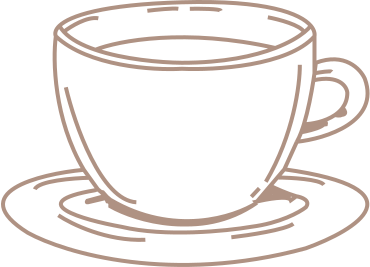

About us

Coffee Shop Samwayle
Only one moment - when the barista reaches out over the bar to transfer the cup to the outstretched hand of the buyer. But this is exactly the moment when a connection arises between us and our guests.
And we strive to do our best to maintain this connection - starting with our commitment to selecting the highest quality coffee in the world and ending with how we interact with guests and organizations to fulfill our obligations.